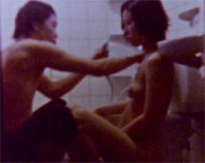

|
GOGAL
EXHAUSTED
Kim Gok | Korea 2008 | 128 Min.
Material: HDV
Format: Beta SP
Originalsprache: Koreanisch
Drehbuch: Kim Gok
Kamera: Kwon Sang-Joon
Ton: Kwak Yong-Sik
Schnitt: Kim Gok, Kim Sun
Musik: Hong Chul-Ki
Mit Jang Liu, Park Ji-Hwan, Oh Keun-Young
Produktion: Kim Gok, Kim Sun
Vertrieb: Goksa
"Der Mensch liegt in größter Not! Der Mensch liegt in größter Pein!" Das Elend aus Gustav Mahlers Zweiter Sinfonie überträgt sich direkt von der Tonspur des Films in die verdreckten Super-8-Bilder dieses kompromisslos und schockierenden Werkes der Kim-Brüder, Gok und Sun. Wie schon in ihren früheren Arbeiten und Kurzfilmen gibt es auch im neuen Film kein Herauskommen aus der hermetisch verschlossenen, dunklen Welt voller Abschaum, Ausbeutung und Erniedrigung. Gnadenlos wird die sexuelle Ausbeutung und Unterdrückung der Frau in den Kontext einer post-apokalyptischen, post-industriellen Landschaft gestellt. In dieser hoffnungslosen Welt ist jeder Ausbruchversuch zum Scheitern verurteilt.
Kim Gok, geboren 1978 in South Korea. Regisseur zahlreicher Kurz- und Langfilme.
Filme (Auswahl): Anti-Dialectic 2001 | Time Consciousness 2002 | Capitalist Manifesto: Working Men of All Countries, Accumulate! 2003 | Principle of Party Politics 2003 | Light and Class 2003 | GEO-LOBOTOMY 2006 | Exhausted
zurück
|